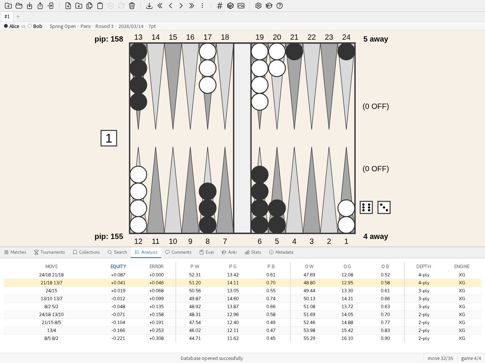

2. User Guide
This guide is a practical introduction to blunderDB for a quick start. Four end-to-end tutorials cover the most common uses; the rest of the guide remains a reference catalogue, gesture by gesture, to consult as needed.
2.1. End-to-end tutorials
2.1.1. My first import
This tutorial starts from an eXtreme Gammon match file (.xg) and ends at the list of positions where you lost the most.
Create a database. “New Database” button in the toolbar (or CTRL-N), choose a location and a name; the
.dbextension is added automatically.Import the match. Drag and drop the
.xgfile onto the blunderDB window (or CTRL-I, then select it). blunderDB detects the format, imports the positions and the analysis already present in the XG file (plays, cube decisions, flags), and shows the matches panel once the import succeeds.Review the match. Double-clicking the match row (or selecting it and pressing ENTER) opens the review on the last position visited. The LEFT/RIGHT keys (or j/k) step through the plays; PageUp/PageDown switch games.
Read the analysis. CTRL-L shows the Analysis panel: the best plays, their equity and the error of the play made (highlighted in the table). On a cube decision, the same key shows the cube equity table and the verdict.

The Analysis panel during a match review: the play made is highlighted in the candidate moves table.
Find the biggest errors. From anywhere, the
blcommand (orblunders, SPACE to open the command line) loads the positions with the costliest error directly into the analysis panel — no need to build a search by hand for a first pass over an import. See Stats Panel to narrow this down by player or date range once several matches are imported.
{kind=link}
2.1.2. Studying a match
Once several matches are imported, this tutorial details studying one match in particular — beyond the simple walkthrough of the previous tutorial.
Open the matches panel (CTRL-Tab). It lists every imported match, sortable by column (player, date, length, tournament, PR).

The matches panel: sortable list, PR and MWC cost per match.
Open the review by double-clicking the row, or by selecting it then ENTER. The info bar above the board recalls both players, the tournament and the score.
Toggle checker play / cube decision with the d key on the same position when both analyses are available (either one may be missing depending on what the imported file contained).

A cube decision in the Analysis panel: money equities, the error of each option, the best decision.
Annotate what you observe: CTRL-P opens the Comments panel on the position shown — useful for noting why a play is a blunder, not just that it is one.

The Comments panel: a thread of exchanges attached to the position shown.
Tag a position to replay later: SPACE to open the command line,
#followed by a keyword (for example#blitz), ENTER. See Edit a position to edit the position directly if the play made is not the one you want to study.Leave match mode with the
mcommand: the library returns to its previous state, and the last position visited in the match is remembered for next time.
2.1.3. An Anki session
The Anki panel turns a collection or a search into a deck of cards to review using the FSRS (spaced repetition) algorithm.
Build the deck. Two possible starting points: a collection of hand-picked positions, or a search (CTRL-F) — for example every cube decision flagged as an error. The
bl 30command (30 worst errors) is a fine starting point for a first deck.Create the deck. Open the Anki panel (CTRL-K), “New Deck” button, name the deck; it synchronises with the search or collection chosen.

The Anki panel: one deck per row, total cards, new and due today.
Review (Study): each card shows a position, you work out your answer mentally, reveal the solution (the board, the analysis and any comment), then rate your estimate from 1 (missed) to 4 (easy). FSRS spaces out the next showing accordingly. Nothing forces you to reveal the answer to move on if you are sure of yourself.
Warm up without disturbing the schedule (Cram): shows random positions from the deck without touching the FSRS schedule — handy before a tournament, or to review intensively without pushing back the other cards’ due dates.
See Anki Panel for the parameters in detail (limiting the session, target retention rate, resetting a deck).
2.1.4. Deploying server mode behind a proxy
Server mode (blunderdb serve) exposes blunderDB’s engine over HTTP + JSON. It authenticates no one (ADR-0005): it trusts the X-Tenant-ID header exactly as received, and so must always sit behind a reverse proxy that authenticates and sets that header itself. This tutorial deploys the published image behind a minimal nginx, with single-tenant HTTP Basic authentication — the simplest starting point, to adapt (SSO, client certificates, per-user multi-tenant mapping) to your context.
Start the daemon, bound to
127.0.0.1(never exposed directly):docker run --rm -p 127.0.0.1:8080:8080 -v blunderdb-data:/data \ -e BLUNDERDB_BACKEND=sqlite -e BLUNDERDB_DSN=/data/blunderdb.db \ ghcr.io/kevung/blunderdb-serve:0.35.0
Create a password file for Basic authentication:
htpasswd -c /etc/nginx/blunderdb.htpasswd alice
Configure nginx to authenticate and then relay, setting
X-Tenant-IDitself — never the one sent by the client:server { listen 443 ssl; server_name blunderdb.exemple.org; location /v1/ { auth_basic "blunderDB"; auth_basic_user_file /etc/nginx/blunderdb.htpasswd; proxy_pass http://127.0.0.1:8080; proxy_set_header X-Tenant-ID "1"; } }
Check with the health sub-command, which does not go through the proxy:
docker exec <container> blunderdb healthcheck
See Headless mode (server) for the full surface (routes, multi-tenant PostgreSQL backend with Row-Level Security, migration from SQLite) and the published Docker image.
2.3. Demo scenario (3 minutes)
To present blunderDB without a personal database, the demo command loads a sample database (fictional positions and matches). The following scenario runs in three minutes:
0:00 —
demoon the command line (or the corresponding toolbar button) loads the sample database. The matches panel is shown.0:30 — Open a match (double-click), step through a few plays with the arrow keys, show the Analysis panel (CTRL-L) on a play made with a visible error.
1:30 —
blcommand: the view switches directly to the worst errors in the database, across every position.2:15 — Anki panel (CTRL-K): create a deck from these positions, run one card in Study to show the question/answer/rating cycle.
2:45 — Back to the Stats panel (CTRL-D), Dashboard tab, to show where this work shows up over time.
2.4. Create a new database
To create a new database, click the “New database” button in the toolbar. Choose a path and a name for the database, then click “Save”.
Note
The file extension for blunderDB databases is .db.
Tip
Keyboard shortcuts: CTRL-N. Command: n
2.5. Open an existing database
To load an existing database, click the “Open a database” button in the toolbar. Browse to where the database is, select the .db file and click “Open”.
Tip
Keyboard shortcuts: CTRL-O. Command: o
2.6. Import and merge a database
To import and merge another blunderDB database into the currently open one, click the “Import a database” button in the toolbar. Select the .db file to import and click “Open”.
blunderDB will intelligently merge the two databases:
Positions that do not exist in the current database will be added with their analyses and comments.
Positions that already exist will be updated: analyses will be completed if missing, and comments will be merged (adding new comments without duplicating existing ones).
A message will summarize the number of positions added, merged, and ignored.
Note
The import requires that both databases have compatible schema versions. It is possible to import a database with a lower or equal version into a database with a higher version.
Caution
The import operation immediately modifies the currently open database. It is recommended to make a backup copy before importing another database.
2.7. Edit a position
To edit a position, press the TAB key to open the search panel and the position editor. Edit the position with the mouse:
Click on the points to add checkers. A left-click assigns checkers to player 1. A right-click assigns checkers to player 2. To insert a prime, click on the starting point, hold down the button, and release on the endpoint. Click on the bar to place checkers in the bar.
To clear the position, double-click on an empty area outside the board or press the BACKSPACE key.
To send the cube to Player 1, left-click on the cube. To send the cube to Player 2, right-click on the cube.
To indicate the player who is to move, click on the designated dice area.
To edit the dice, left-click to increase the value of a die, right-click to decrease the value of a die. If the dice faces are empty, it means the position is a cube decision.
To edit the players’ score, left-click to increase the score, right-click to decrease the score.
Tip
The input of the position with the mouse for the checkers is done in the same way as in XG.
2.8. Add a position to the database
After editing the position, the search panel is open.
To save the previously obtained position, press CTRL-S or click the “Save Position” button in the toolbar.
Tip
Open the command line and execute: w
2.9. Tag a position
To add a tag toto to the current position, open the command line by pressing SPACE, type #toto, and confirm the command by pressing ENTER.
2.10. Delete a position
To delete the current position from the database, press Del or click the “Delete Position” button in the toolbar.
Tip
In the command line, execute d.
Caution
The deletion of the position is final and does not require any user confirmation.
2.11. Import a position from XG
To import a position directly from XG,
display the position to import in XG and press CTRL-C,
open blunderDB and press CTRL-V.
Note
The automatic paste detects the source format (XG, GNUbg, BGBlitz).
2.12. Import a match
blunderDB can import matches from various sources.
Supported formats:
eXtreme Gammon (XG): .xg and .xgp (positions) files
GNUbg: .sgf files
Jellyfish: .mat and .txt files
BGBlitz: .bgf and .txt files
To import one or more match files:
Press CTRL-I or click the “Import” button in the toolbar.
Select one or more files to import.
blunderDB automatically detects the format and imports the match.
A progress window shows the number of imported, failed, and skipped (duplicate) files.
Tip
Command: i
Note
blunderDB automatically detects duplicates and prevents importing a match already present in the database.
2.13. Import a folder of matches
To recursively import all match files contained in a folder and its subfolders:
Press CTRL-SHIFT-F or click the corresponding button in the toolbar.
Select the folder containing the match files.
blunderDB automatically collects and imports all recognized files (.xg, .xgp, .sgf, .mat, .txt, .bgf).
2.14. Drag and drop
blunderDB supports drag and drop. You can drag and drop onto the blunderDB window:
match or position files (.xg, .xgp, .sgf, .mat, .txt, .bgf) to import them,
database files (.db) to open or merge them with the current database,
folders to recursively import all the files they contain.
2.16. Manage the match panel
The match panel (CTRL-Tab) allows you to:
list all imported matches (sorted from most recent to oldest),
sort matches by column (player 1, player 2, date, match length, tournament),
edit player names or date by double-clicking on the fields,
swap player 1 and player 2 using the swap button,
assign a match to a tournament,
delete a match using the Del key.
2.17. Manage collections
Collections allow you to organize positions into custom groups. To access the collections panel, press CTRL-B.
Create a collection:
Open the collections panel (CTRL-B).
Enter the name of the new collection and click “Add”.
Add positions to a collection:
Select the desired positions.
Add them to the collection from the collections panel.
Browse a collection:
Double-click on a collection to browse its positions. The order of collections and positions can be changed by drag and drop.
Tip
Command: coll
2.18. Manage tournaments
Tournaments allow you to organize imported matches by event. To access the tournaments panel, press CTRL-Y.
Create a tournament:
Open the tournaments panel (CTRL-Y).
Click “Add” and enter the tournament name.
Assign a match to a tournament:
From the match panel (CTRL-Tab), use the dropdown menu in the tournament column to assign a match.
2.19. Display performance statistics
The Stats panel lets you view your performance indicators (PR and MWC cost) from imported positions.
Press CTRL-D or click the Stats tab in the bottom panel.
Use the filter bar to restrict the analysis by player, tournament, date range, decision type, or match length.
Click an indicator to jump directly to the corresponding positions.
2.20. Evaluating a position (Eval panel)
The Eval panel evaluates any position — not just a race. On a pure bearoff position, it computes the EPC (Effective Pip Count) and the other bearoff statistics; on any other position, the embedded gammonNet evaluator provides the candidate plays or the cube decision, offline, without XG or GNUbg.

The Eval panel: win/gammon/backgammon chances, equity and error of each candidate play, computed by gammonNet.
Press CTRL-E, click the Eval tab in the bottom panel, or run the
epccommand: the panel opens on a blank board, ready to edit.To evaluate the position already shown (a position from the library, or one from a match under review) rather than a blank board, right-click the board then “Evaluate this position” — the position shown is sent as-is into the Eval panel.
The entire board is editable by click or keyboard: checkers, dice, score, cube position, player on roll. Editing only the checkers in the home board (last 6 points) on both sides puts the position into bearoff regime.
Results are shown in real time: in pure bearoff, EPC, average number of rolls, standard deviation, pip count and wastage, the win probability of the player on roll and, in the exact domain, the money cube verdict; on any other position with dice set, the candidate plays ranked by equity; without dice, the cube decision. See the “Methodology and assumptions of the Eval panel” section of the manual.
To practise estimating these values, tick the Challenge box: results are hidden on every change and are revealed area by area, with a click.
Note
The panel works for both players simultaneously.
2.21. Display the analysis of a position imported from XG
If a position analyzed by XG, GNUbg, or BGBlitz has been imported into blunderDB, the analysis can be displayed by pressing CTRL-L.
If the position corresponds to a checker decision, the five best moves are displayed on separate lines. For each line, the information provided is in this order: the associated checker move, the normalized equity, the error in equity of the move, the winning chances, gammon, and backgammon for the player, and the winning chances, gammon, and backgammon for the opponent, along with the level of analysis.
If the position corresponds to a cube decision, the cost of each decision is displayed along with the winning chances of the position.
When multiple analysis engines are present for the same position (for example XG and GNUbg), an additional column indicates the source engine of each analysis.
When navigating a match, the actually played move is highlighted in the move list. If the position was encountered in multiple matches, all played moves are indicated.
Tip
By clicking on a move in the analysis panel, the corresponding arrows are displayed on the board.
2.22. Export a position to XG
To export a position from blunderDB to XG,
display the position to export in blunderDB and press CTRL-C,
open XG and press CTRL-V.
2.23. View the different positions
To view the different positions in the current library, use the LEFT and RIGHT keys. The HOME key allows you to go to the first position, and the END key lets you go to the last position.
To display the bearoff on the left, press CTRL-LEFT. To display the bearoff on the right, press CTRL-RIGHT.
2.24. Search for positions based on criteria
To search for types of positions,
press TAB to open the search panel,
edit the structure of the position to search for. blunderDB will filter positions that have at least the entered checker structure. If unsure, to maximize results, clear the position by pressing the BACKSPACE key. Edit the cube position and the score if necessary.
The search panel offers two checker structures, selected with the At least and Except tabs at the top of the panel:
At least (default): blunderDB filters positions that have at least the entered checker structure;
Except: blunderDB excludes positions that contain one of the entered checkers. The board is outlined in red while editing this structure. A position is rejected if it contains at least one of the drawn elements (for example, drawing a checker on points 1, 3 and 5 keeps only positions with no checker on any of these points). The number of checkers per point is not limited: setting 3 checkers on a point excludes positions with 3 or more checkers there (useful to search for a made point without a spare). Two quick clicks on a point mark it as required to be empty (a red hatched cell, no checker of any colour); a single click on that point unblocks it.
When a point belongs to both structures, the Except criterion prevails if it contradicts the At least criterion.
Method 1 (simple):
Open the search window (CTRL-F)
Add and set the search filters
Confirm by clicking on “Search”.
Method 2 (advanced):
open the command line by pressing SPACE,
type s, and add any additional filters (for example, cube or score to consider the cube and score, respectively. See Section 4.4 for a comprehensive list of available filters).
confirm the request by pressing ENTER.
The displayed positions are those from the database that meet the search criteria entered by the user.
2.25. Going further
This guide covers the most common uses. blunderDB offers several further features, detailed in the manual:
Spaced repetition (Anki) — the Anki panel (CTRL-K) turns a collection or a search into a deck of cards to review under the FSRS algorithm, with a free practice mode (cram) that leaves the schedule untouched. See Anki Panel.
Multiple views — a tab bar under the toolbar keeps several independent workspaces open side by side (a search and the navigation through a match, say), each with its own position list and its own context. See View Tabs.
Watermarked distribution — an export can be signed with your issuer identity (a tamper-proof watermark stating where the file came from) and password-protected for transport. See Handing out a database: origin and password.
Guided tours and demo database — the
tourcommand (aliastutorial) opens a catalogue of guided tours of the interface, and thedemocommand loads a sample database so the tool can be explored without a personal one. See Guided tours and sample database.Load the worst errors — the
blcommand (orblunders) loads the worst errors (equity or MWC) straight into the analysis view, under the Stats panel’s current filter, with no manual search. See Stats Panel.
2.2. How to improve with blunderDB
Beyond the tutorials above, a simple weekly routine gets the most out of blunderDB to improve:
Import the week’s matches (drag and drop, or recursive folder import for several files) as soon as possible after playing them — the memory of the context fades fast.
Filter the costliest decisions: the
blcommand (worst errors), or the Stats panel filtered on the period and the decision type (checker / cube) that weighs most in the PR.Comment on every position reviewed: what was missed, the structure at fault. A written comment forces an explanation — a position merely reviewed without a word is forgotten as fast as it was missed.
Build an Anki deck from these commented positions: spaced repetition brings the same patterns back until they become reflexes.
Track PR per tournament in the Progression tab of the Stats panel (Stats Panel): a curve that goes down tournament after tournament is the only signal that never lies.
This routine is only worth it if it is kept up — ten minutes a week, sustained, beats a one-off review that gets abandoned.